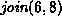
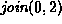

-
For each of the following implementations
derive an expression for the total memory space required
to represent a set which contains of n elements
drawn from the universe
 .
.
- SetAsArray (Program
 ),
), - SetAsBitVector (Program ),
- MultisetAsArray (Program ), and
- MultisetAsLinkedList (Program ).
-
In addition to = and
 ,
a complete repertoire of set operators includes
,
a complete repertoire of set operators includes
 , ,
, ,  and
and  .
For each of the set implementations listed in Exercise
show how to implement the remaining operators.
.
For each of the set implementations listed in Exercise
show how to implement the remaining operators. -
The symmetric difference of two sets S and T,
written is given by
For each of the set implementations listed in Exercise
devise an algorithm to compute symmetric difference.
What is the running time of your algorithm?
-
The complement
of a set S over universe U,
written S' is given by
Devise an algorithm to compute the complement of
a set represented as a bit vector.
What is the running time of your algorithm?
-
Devise an algorithm to sort a list of integers using a multiset.
What is the running time of your algorithm?
Hint: See Section .
-
Consider a multiset implemented using linked lists.
When the multiset contains duplicate items,
each of those items occupies a separate list element.
An alternative is to use a linked list of ordered pairs
of the form
 where i an the element of the universal set U
and
where i an the element of the universal set U
and  is a non-negative integer that counts the number
of instances of the element i in the multiset.
is a non-negative integer that counts the number
of instances of the element i in the multiset.
Derive an expression for the total memory space required
to represent a multiset which contains of n instances
of m distinct element drawn from the universe .
-
Consider a multiset implemented
as described in Exercise .
Devise algorithms for set union, intersection, and difference.
What are the running times of your algorithms?
-
Consider the initial partition
.
For each of the methods of computing the union listed below
show the result of the following sequence join operations:
,
,
,
,
,
,
,
,
.
- simple union,
- union by size,
- union by height, and
- union by rank.
-
For each final partition obtained in Exercise ,
show the result of performing a collapsing find
operation for item 9.
-
Consider the initial partition P
of the universe
comprised of N sets[22].
-
Show that N-1 join operations can be performed
before the number of elements in the partition
is reduced to one.
-
Show that if n join operations are done (
 ),
the size of the largest element of the partition is
at most n+1.
),
the size of the largest element of the partition is
at most n+1. -
A singleton
is an element of a partition
that contains only one element of the universal set.
Show that when n join operations are done ( ),
at least singletons are left.
-
Show that if less that join operations
are done,
at least one singleton is left.
 Data Structures and Algorithms
with Object-Oriented Design Patterns in Java
Data Structures and Algorithms
with Object-Oriented Design Patterns in Java Copyright © 1998 by Bruno R. Preiss, P.Eng. All rights reserved.
Copyright © 1998 by Bruno R. Preiss, P.Eng. All rights reserved.